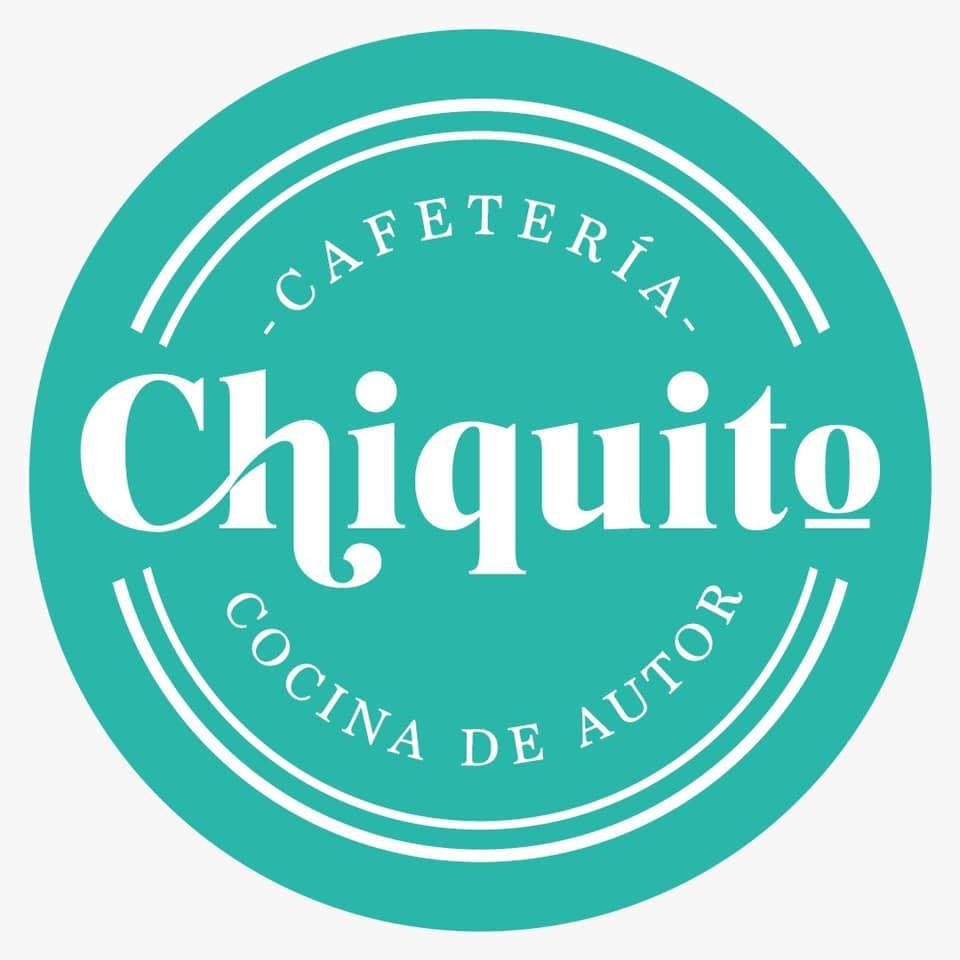

Cafetería & Cocina de Autora
Chiquito Cafetería & Cocina de Autora tiene un ambiente moderno y una decoración cuidada.
Ofrecen una variedad de opciones de café, como espresso, cappuccino, latte, americano, entre otros.
Además del café, tienen una selección de tés, infusiones, chocolatería caliente y bebidas frías como batidos, smoothies y jugos naturales.
Los deliciosos platos que ofrecen al cliente son de un sabor único e inigualable. El ambiente del local es muy acogedor y relajado,
con una decoración muy minimalista y vintage. La iluminación es cálida, música suave de fondo y asientos cómodos para que los clientes disfruten de su tiempo allí.
El personal de la cafetería es amable y atento, brindando un servicio al cliente de calidad. Los baristas están capacitados para preparar diferentes tipos de café y
bebidas, y pueden ofrecer recomendaciones o asesoramiento sobre los productos disponibles.
|

|